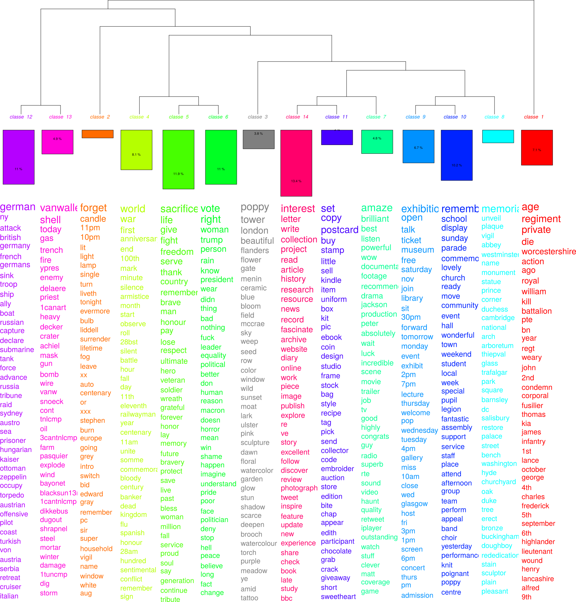

#ww1. online echoes of the centenary of the great war
information
propagation
vibrations
D. Boullier, « Les sciences sociales face aux traces du big data », Revue française de science politique, vol. 65, nᵒ 5, p. 805‑828, 2015.
9 million tweets / 1.5 million users
apiv1.1 / hashtags-based / 2014-2019.
